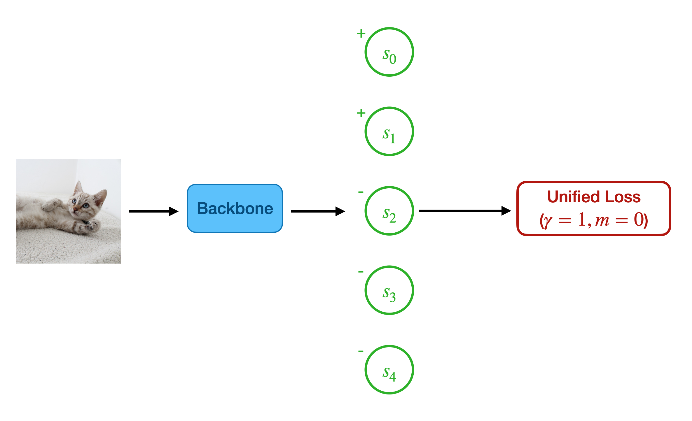

从二分类到多分类，从单标签到多标签
二分类 \(\to\) 多分类
sigmoid+BCE
众所周知，在二分类任务中，我们会让模型输出一个得分 \(s\in\mathbb R\)（也称 logit，见参考资料[1]），然后经由 sigmoid 函数得到一个实数值： \[ \sigma(s)=\frac{1}{1+e^{-s}}\in(0,1) \] 由于这个数在 \((0,1)\) 之间，所以我们可以将它视为属于正例的概率 \(p\)，进而用 binary cross-entropy loss 进行优化： \[ \begin{align} \text{BCE}(p,y)&=-y\log p-(1-y)\log (1-p) \end{align} \] 其中 \(p\in(0,1),\,y\in\{0,1\}\).
softmax+CE
而在多分类任务中，模型输出的得分是一个 \(C\) 维向量 \(\mathbf s\in\mathbb R^C\)（\(C\) 是类别数），然后经由 softmax 函数得到一个向量： \[ \text{softmax}(\mathbf s)_i=\frac{e^{s_i}}{\sum_{j=0}^{C-1} e^{s_j}} \] 由于该向量每个分量都在 \((0,1)\) 之间，且各分量和为 \(1\)，所以我们可以将它视为一个概率向量 \(\mathbf p\)，每个分量代表属于对应类别的概率，进而用 cross-entropy loss 进行优化： \[ \begin{align} \text{CE}(\mathbf p, y)=-\log p_y \end{align} \] 其中 \(y\in\{0,\ldots,C-1\}\)，\(p_y\) 表示取向量 \(\mathbf p\) 中的第 \(y\) 维分量。
二者关系
事实上，binary cross-entropy loss 只是 cross-entropy loss 在二分类情形下的一种更简洁的写法： \[ \begin{align} \text{CE}\left(\begin{bmatrix}p_0\\p_1\end{bmatrix},y\right)&=\begin{cases}-\log p_0,&y=0\\-\log p_1,&y=1\end{cases}\\ &=-y\log p_1-(1-y)\log p_0\\ &=-y\log p_1-(1-y)\log (1-p_1)\\ &=\text{BCE}(p_1,y) \end{align} \] 简洁性源自于 \(p_0+p_1=1\)，所以我们只需要 \(p_0,p_1\) 其中一个就行了。
同理，sigmoid 也可以看作是 softmax 在二分类下的特殊情况，或者换句话说，softmax 是 sigmoid 的多分类推广： \[ \text{softmax}\left(\begin{bmatrix}s_0\\s_1\end{bmatrix}\right)=\begin{bmatrix}\frac{\exp s_0}{\exp s_0+\exp s_1}\\\frac{\exp s_1}{\exp s_0+\exp s_1}\end{bmatrix}=\begin{bmatrix}\frac{1}{1+\exp( s_1-s_0)}\\\frac{1}{1+\exp (s_0-s_1)}\end{bmatrix}=\begin{bmatrix}1-\sigma(s_1-s_0)\\\sigma(s_1-s_0)\end{bmatrix} \]
注意对于 sigmoid 函数，有 \(\sigma(x)=1-\sigma(-x)\).

单标签 \(\to\) 多标签
其实这一节才是本文的重点。我们说 softmax 解决多分类问题，其实默认说的是单标签多分类问题，即每一个样本的正类（目标类、真实标签）只有一个——狗就是狗，猫就是猫。但事实上，现实中很多分类问题是多标签的——比如哈士奇可以同时分在动物、狗、中型犬、哈士奇几个类别下，又比如一张图片中有多个物体。
解决多标签多分类问题，直观来看有两个途径——一是扩展 sigmoid+BCE，把每个标签都看成一个二分类问题，用多个二分类器解决；二是扩展 softmax+CE，直接把单标签多分类问题推广到多标签。下面我们分别来探究一下这两种途径。
途径1：扩展 sigmoid+BCE
最朴素的想法无疑是训练多个二分类器，即在模型输出向量 \(f(x)\in\mathbb R^C\) 后接 sigmoid，然后用 \(C\) 个 binary cross-entropy loss 分别训练，如下： \[ \begin{align} \mathcal L&=\sum_{j\in\mathcal N}\text{BCE}(\sigma(s_j), 0)+\sum_{i\in\mathcal P}\text{BCE}(\sigma(s_i), 1)\\ &=-\sum_{j\in\mathcal N}\log\left(1-\frac{1}{1+e^{-s_j}}\right)-\sum_{i\in\mathcal P}\log\left(\frac{1}{1+e^{-s_i}}\right)\\ &=\sum_{j\in\mathcal N}\log(1+e^{s_j})+\sum_{i\in\mathcal P}\log(1+e^{-s_i}) \end{align}\tag{1} \] 其中 \(\mathcal N\) 是所有负类（非目标类）的集合，\(\mathcal P\) 是所有正类（目标类）的集合。
这样虽然很简单，但是每个二分类器是独立的，缺少了 softmax 中不同类别之间“交互”的感觉。另外，每个二分类器的数据将极度不平衡，因为正类只有一个类别的数据，而负类包括其他所有 \(C-1\) 个类别的数据。
途径2：扩展 softmax+CE
Circle Loss
我们首先改写一下 softmax+CE： \[ \text{CE}(\text{softmax}(\mathbf s), y)=-\log\frac{e^{s_y}}{\sum_{j=0}^{C-1} e^{s_j}}=\log\left[1+{\sum_{j\neq y}e^{s_j-s_y}}\right] \] 可以看出，softmax+CE 是在最小化 \((s_j-s_y)\)——即最小化负类的得分 \(s_j\) 和正类的得分 \(s_y\) 之差。如果沿用这个思路，在不止一个正类的情况下，就让负类和正类两两配对，最小化每一对的得分差值，即： \[ \mathcal L=\log\left[1+\sum_{j\in\mathcal N}\sum_{i\in\mathcal P}e^{s_j-s_i}\right]=\log\left[1+\sum_{j\in\mathcal N}e^{s_j}\sum_{i\in\mathcal P}e^{-s_i}\right]\tag{2} \] 事实上，这个式子是 CVPR2020 Circle Loss 论文[3]中，作者提出的统一形式 loss 的特例： \[ \mathcal L_\text{uni}=\log\left[1+\sum_{i\in\mathcal P}\sum_{j\in\mathcal N} e^{\gamma(s_j-s_i+m)}\right]=\log\left[1+\sum_{j\in\mathcal N}e^{\gamma(s_j+m)}\sum_{i\in\mathcal P}e^{\gamma(-s_i)}\right] \] 其中 scale factor \(\gamma\) 和 margin \(m\) 是两个超参数，取 \(\gamma=1,\,m=0\) 就是 \((2)\) 式。

从 hard form 角度理解
在之前的文章中，我们知道了 \(\text{logsumexp}\) 是 \(\max\) 的平滑近似。如果我们把 softmax+CE 写回 hard 的形式： \[ \text{CE}(\mathbf p, y)=-s_y+\log\sum_{j=0}^{C-1}e^{s_j}\approx-s_y+\max(\mathbf s)=\max\begin{pmatrix}s_0-s_y\\\vdots\\0\\\vdots\\s_{C-1}-s_y\end{pmatrix}=\left[\max_{j\neq y}(s_j)-s_y\right]_+ \] 其中 \([\bullet]_+\) 是 \(\max(0,\bullet)\) 的简写。可以看出，正如上文所言，softmax+CE 的目标是让所有负类的得分小于正类的得分。
同样的，我们可以将 \((2)\) 式写回 hard 形式[4]： \[ \begin{align} \mathcal L&=\log\left[1+\sum_{j\in\mathcal N}e^{s_j}\sum_{i\in\mathcal P}e^{-s_i}\right]\\ &\approx\left[\log\left(\sum_{j\in\mathcal N}e^{s_j}\sum_{i\in\mathcal P}e^{-s_i}\right)\right]_+\\ &=\left[\log \sum_{j\in\mathcal N}e^{s_j}+\log\sum_{i\in\mathcal P}e^{-s_i}\right]_+\\ &\approx\left[\max_{j\in\mathcal N}(s_j)-\min_{i\in\mathcal P}(s_i)\right]_+ \end{align} \] 其中第一个约等于利用了 \(\text{softplus}(x)=\log(1+e^x)\) 是 \(\max(0,x)\) 的平滑近似。从上式看出，\((2)\) 式的目标是让所有负类的得分小于正类的得分。
引入阈值
在大多数多标签场景下，我们并不知道测试图像究竟对应多少个标签，那么面对模型给我们吐出来的 \(C\) 个得分，我们应该怎么选取阈值来决定接收哪些得分呢？苏神在他的博客[2]中给出了一个方案。
我们回顾一下上一小节中 \((2)\) 式的 hard 形式以及画的数轴图，可以看出 \((2)\) 式只希望让 \(\max_{j\in\mathcal N}(s_j)\) 移动到 \(\min_{i\in\mathcal P}(s_i)\) 左边就行了，但没说这个分界点到底在哪儿。因此，我们可以人为的添加一个分界点 \(\tilde s\)，让 \(\max_{j\in \mathcal N}(s_j)<\tilde s\)、同时 \(\min_{i\in\mathcal P}(s_i)>\tilde s\)，如图所示：

要做到这一点，仿照之前的思路，向 \((1)\) 式添加最小化 \(s_j-\tilde s\) 和 \(\tilde s-s_i\) 的两项： \[ \begin{align} \mathcal L&=\log\left[1+\sum_{j\in\mathcal N}\sum_{i\in\mathcal P}e^{s_j-s_i}+\sum_{j\in\mathcal N}e^{s_j-\tilde s}+\sum_{i\in\mathcal P}e^{\tilde s-s_i}\right]\\ &=\log\left[\left(e^{\tilde s}+\sum_{j\in\mathcal N}e^{s_j}\right)\left(e^{-\tilde s}+\sum_{i\in\mathcal P}e^{-s_i}\right)\right]\\ &=\log\left(e^{\tilde s}+\sum_{j\in\mathcal N}e^{s_j}\right)+\log\left(e^{-\tilde s}+\sum_{i\in\mathcal P}e^{-s_i}\right) \end{align}\tag{3} \] 简单起见，取阈值 \(\tilde s=0\)，那么 \((3)\) 式简化为： \[ \mathcal L=\log\left(1+\sum_{j\in\mathcal N}e^{s_j}\right)+\log\left(1+\sum_{i\in\mathcal P}e^{-s_i}\right)\tag{4} \] 理论上，使用 \((4)\) 式训练模型，测试时选取得分为正的类别输出即可。但在苏神博客的评论区中，有网友反映这个阈值可能还是当作超参数在验证集上调一调比较好。
\((2)\) 式可以看作是只关心正类和负类得分的相对大小，而 \((3),(4)\) 式则是引入了一个人为指定的值使得得分的绝对大小有了意义。
殊途同归？
最有趣的部分来了，仔细看看 \((4)\) 式，是不是感觉似曾相识？没错，\((1)\) 式和它非常相似啊！事实上，\((4)\) 式是 \((1)\) 式的低阶截断： \[ \begin{align} \mathcal L_{(1)}&=\sum_{j\in\mathcal N}\log(1+e^{s_j})+\sum_{i\in\mathcal P}\log(1+e^{-s_i})\\ &=\log\left(\prod_{j\in\mathcal N}(1+e^{s_j})\right)+\log\left(\prod_{i\in\mathcal P}(1+e^{-s_i})\right)\\ &=\log\left(1+\sum_{j\in\mathcal N}e^{s_j}+\cdots\right)+\log\left(1+\sum_{i\in\mathcal P}e^{-s_i}+\cdots\right)\\ &\xrightarrow{\text{cutoff}}\log\left(1+\sum_{j\in\mathcal N}e^{s_j}\right)+\log\left(1+\sum_{i\in\mathcal P}e^{-s_i}\right)=\mathcal L_{(4)} \end{align} \] 两种推导途径最后竟然殊途同归了！呃……好吧，其实也没有归到一起，因为丢弃掉的高阶项并不是可以忽略的接近 \(0\) 的数。苏神评论区中网友们讨论说，这些丢掉的高阶项会加剧数据不平衡的影响，导致 sigmoid+BCE 性能下降，从这个角度说，丢掉它们的 \((4)\) 式可以看作是 sigmoid+BCE 的一种修正。
然而，\((4)\) 式将正类和负类完全分开的形式，少了 softmax+CE 中正负类“交互”的感觉。从梯度的角度说，softmax+CE 产生的梯度正负类会同时出现，且有一个优秀的性质是它对正类产生的梯度的绝对值等于对所有负类产生的梯度之和的绝对值（符号相反）[6]： \[ \begin{align} &\text{CE}(\text{softmax}(\mathbf s),y)=-s_y+\log\sum_{j=0}^{C-1}e^{s_j}\\ \implies&\nabla_{s_k}\text{CE}(\text{softmax}(\mathbf s),y)= \begin{cases} -1+(e^{s_y})/\left(\sum_{j=0}^{C-1}e^{s_j}\right)&k=y\\ (e^{s_k})/\left(\sum_{j=0}^{C-1}e^{s_j}\right)&k\neq y \end{cases}\\ \implies&\nabla_{s_y}\text{CE}(\text{softmax}(\mathbf s),y)+\sum_{k\neq y}\nabla_{s_k}\text{CE}(\text{softmax}(\mathbf s),y)=0 \end{align} \] 这个性质也被继承到了 \((2)\) 式中： \[ \begin{align} &\mathcal L_{(2)}=\log\left[1+\sum_{j\in\mathcal N}e^{s_j}\sum_{i\in\mathcal P}e^{-s_i}\right]\\ \implies&\nabla_{s_k}\mathcal L_{(2)}= \begin{cases} \left(e^{s_k}\cdot\sum_{i\in \mathcal P}e^{-s_i}\right)/\left(1+\sum_{j\in\mathcal N}e^{s_j}\sum_{i\in\mathcal P}e^{-s_i}\right)&k\in\mathcal N\\ \left(-e^{-s_k}\cdot\sum_{j\in \mathcal N}e^{s_j}\right)/\left(1+\sum_{j\in\mathcal N}e^{s_j}\sum_{i\in\mathcal P}e^{-s_i}\right)&k\in\mathcal P\\ \end{cases}\\ \implies&\sum_{k\in\mathcal N}\nabla_{s_k}\mathcal L_{(2)}+\sum_{k\in\mathcal P}\nabla_{s_k}\mathcal L_{(2)}=0 \end{align} \] 但 \((4)\) 式并没有这个性质： \[ \begin{align} &\mathcal L_{(4)}=\log\left(1+\sum_{j\in\mathcal N}e^{s_j}\right)+\log\left(1+\sum_{i\in\mathcal P}e^{-s_i}\right)\\ \implies&\nabla_{s_k}\mathcal L_{(4)}= \begin{cases} (e^{s_k})/\left(1+\sum_{j\in\mathcal N}e^{s_j}\right)&k\in\mathcal N\\ (-e^{-s_k})/\left(1+\sum_{i\in\mathcal P}e^{-s_i}\right)&k\in\mathcal P \end{cases} \end{align} \] 由此看来，\((4)\) 式也具有一定的局限性。
话说回来，\((4)\) 式是由 \((2)\) 式在引入阈值之后推得的，如果我们的应用场景不需要阈值，就可以直接使用 \((2)\) 式而不必担心什么了。我目前发现的一个应用场景是：经典的对比学习任务中，一个 anchor 只有一个 positive sample（有多个 negative samples），一般调用 cross-entropy loss 来实现 InfoNCE；而若一个 anchor 具有多个 positive samples，将 cross-entropy loss 修改为 \((2)\) 式即可。
PyTorch 实现
具体到代码实现上，我们要注意几个问题：
- 尽可能调用封装好的
logsumexp操作来避免数值计算问题 - 数学公式里可以把 positive 和 negative 分开写，但是代码里为了保持 tensor 维度的统一，只能通过加上大负数等技巧实现
\((2)\) 式的 PyTorch 实现： \[ \mathcal L=\log\left[1+\sum_{j\in\mathcal N}e^{s_j}\sum_{i\in\mathcal P}e^{-s_i}\right]=\log\left[1+\exp\left(\log\sum_{j\in\mathcal N}e^{s_j}+\log\sum_{i\in\mathcal P}e^{-s_i}\right)\right]\tag{2} \]
1 | |
调用时，传入网络的输出 pred 和真实标签 target，二者最后一维大小是类别数。target 中 1 表示正类，-1 表示负类，0 表示不关心的类。
\((4)\) 式的 PyTorch 实现： \[ \mathcal L=\log\left(1+\sum_{j\in\mathcal N}e^{s_j}\right)+\log\left(1+\sum_{i\in\mathcal P}e^{-s_i}\right)\tag{4} \]
1 | |
调用时，传入网络的输出 pred 和真实标签 target，二者最后一维大小是类别数。target 中 1 表示正类，-1 表示负类，0 表示不关心的类。
参考资料
- 如何理解深度学习源码里经常出现的logits？ - 王峰的回答 - 知乎 https://www.zhihu.com/question/60751553/answer/1986650670 ↩︎
- 苏剑林. (Apr. 25, 2020). 《将“softmax+交叉熵”推广到多标签分类问题 》[Blog post]. Retrieved from https://kexue.fm/archives/7359 ↩︎
- Sun, Yifan, et al. Circle loss: A unified perspective of pair similarity optimization. Proceedings of the IEEE/CVF Conference on Computer Vision and Pattern Recognition. 2020. ↩︎
- 如何理解与看待在cvpr2020中提出的circle loss？ - 王峰的回答 - 知乎 https://www.zhihu.com/question/382802283/answer/1114719159 ↩︎
- 如何理解与看待在cvpr2020中提出的circle loss？ - 孙奕帆的回答 - 知乎 https://www.zhihu.com/question/382802283/answer/1116269890 ↩︎
- Softmax理解之二分类与多分类 - 王峰的文章 - 知乎 https://zhuanlan.zhihu.com/p/45368976 ↩︎